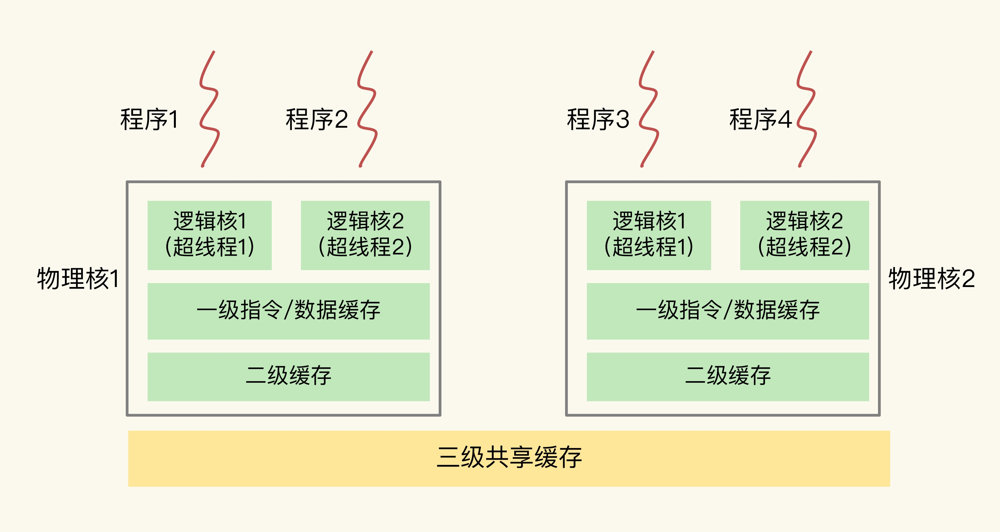
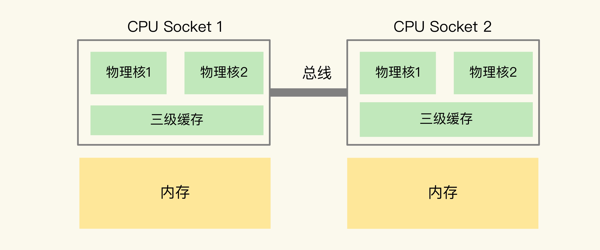

CPU结构影响Redis性能
CPU结构

- 一个 CPU 处理器会有 10 到 20 多个物理核。同时，为了提升服务器的处理能力，服务器上通常还会有多个 CPU 处理器
- 
NUMA架构
- 在多 CPU 架构下，一个应用程序访问所在 Socket 的本地内存和访问远端内存的延迟并不一致，所以，我们也把这个架构称为非统一内存访问架构
绑定
- task-set
- taskset -c 0 ./redis-server
优化方案
- 一个 Redis 实例对应绑一个物理核
- 修改 Redis 源码，把子进程和后台线程绑到不同的 CPU 核上
思考题
- 在一台有 2 个 CPU Socket（每个 Socket 8 个物理核）的服务器上，我们部署了有 8 个实例的 Redis 切片集群（8 个实例都为主节点，没有主备关系），现在有两个方案：在同一个 CPU Socket 上运行 8 个实例，并和 8 个 CPU 核绑定；在 2 个 CPU Socket 上各运行 4 个实例，并和相应 Socket 上的核绑定。如果不考虑网络数据读取的影响，你会选择哪个方案呢？
- 在两个CPU Socket上各运行4个实例，并和相应Socket上的核绑定。这么做的原因主要从L3 Cache的命中率、内存利用率、避免使用到Swap这三个方面考虑